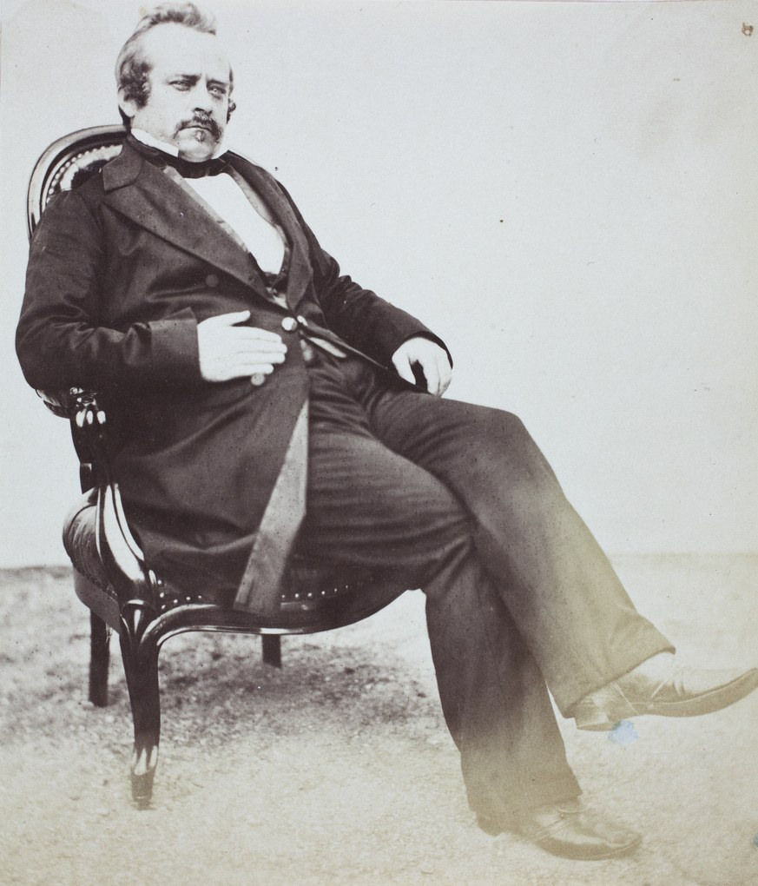
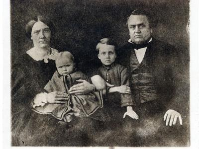

THE CARERS' GALLERY
From New England to China
In the nineteenth century, men and women from New England, upstate New York,
and New Jersey carried the Gospel — and works of mercy — to China.
Their witness still speaks: care was never a slogan, but a lifetime of walking alongside.
First Among Them — The Man from East Windsor

Samuel Robbins Brown · 1810–1880
Samuel Robbins Brown
1810 – 1880 · EAST WINDSOR, CONNECTICUT
Samuel Robbins Brown was born in East Windsor, Connecticut, on June 16, 1810. In his day there was no South Windsor — the town would not be set off from East Windsor until 1845, when Brown was thirty-five. The old town center of East Windsor itself stood at East Windsor Hill, on Main Street in what is today South Windsor. The line between the two towns is a modern invention; in Brown's Connecticut it was all one place — East Windsor, daughter of Ancient Windsor. He graduated from Yale College in 1832, belonged to the first graduating class of Union Theological Seminary, and before ever leaving America taught for four years at the New York Institution for the Deaf and Dumb. He was a schoolmaster by training, and a schoolmaster he remained all his life.
In 1838 he sailed for Canton under the Morrison Education Society and opened China's first Protestant school — at Macao in 1839, moved to Hong Kong in 1842. Its annual reports, printed in the Chinese Repository from 1840 to 1846, record one of the earliest experiments in modern education on Chinese soil.
In 1847 his wife's failing health forced the family home. Brown did not return alone: three of his pupils — Yung Wing, Wong Shing, and Wong Foon — crossed the Pacific with him and enrolled at Monson Academy in Massachusetts. In 1854 Yung Wing graduated from Yale College, the first Chinese student to graduate from an American university. Those three boys were the beginning of China's great educational mission to America.
Brown also labored for the founding of a college for women — first at Auburn, then at Elmira, New York. That school is Elmira College today.
After the Harris Treaty of 1858 opened Japan, Brown sailed for Yokohama. For twenty years (1859–1879) he ran a school whose hundreds of pupils became leaders of modern Japan, headed the translation of the New Testament into Japanese, and helped found the Asiatic Society of Japan. Several of his English pupils were among the first Japanese Christians baptized, at Yokohama in 1872.
The bridge: A Connecticut schoolmaster whose classrooms spanned three nations — he carried modern schooling to China, carried Chinese students to America, and carried the Gospel to Japan. He was born in East Windsor before South Windsor existed; the old town center he knew stands on Main Street in today's South Windsor. Two centuries later, on King Street — a few miles from that old center — the Golden Lampstand Association continues the same calling: forming caregivers, and building a home for them to return to.
The Thirteen
From the nineteenth century into the mid-twentieth, they set out from New England, upstate New York, and New Jersey, and gave their lives to China.
Samuel Robbins Brown
China's first Protestant schoolmaster; the man who brought the first Chinese students to America; translator of the Japanese New Testament. Read his full story above — he is the bridge this gallery stands on: East Windsor to the world.

Elijah Coleman Bridgman
The first American Protestant missionary appointed to China, sailing in October 1829 — and the model of the bridge-builder. He founded the Chinese Repository in 1832, the world's first major journal of sinology: he explained China to the West. Then he turned the bridge around — mastering Cantonese within a year, publishing a 730-page Cantonese textbook, and writing the first Chinese-language history of the United States: he explained America to China. He helped draft America's first treaty with China and spent his final years in Shanghai supervising the Bible's translation. He died in Shanghai in 1861 and never came home. Two worlds, one life's work.

Eliza Jane Gillett Bridgman
She sailed as one of the first three unmarried women missionaries of her board and married Elijah Bridgman in Hong Kong in 1845. In Shanghai she founded and ran the first Protestant girls' school for fifteen years — building a bridge for Chinese women into a world of learning that had been closed to them. Widowed in 1861, she returned to China alone, and in 1864, at her own expense, bought land in Beijing to found the Bridgman Academy, the forerunner of Yenching University's women's college. Her schools trained a generation of Chinese women leaders. She died in Shanghai in 1871 and lies buried beside her husband.

Peter Parker
China's first full-time Protestant medical missionary — and proof that mercy is a bridge nothing else can build. In 1835 he opened the Ophthalmic Hospital in Canton; more than two thousand patients came in its first year, and he was the first to bring ether anesthesia to China. He hired the Western-trained Chinese painter Lam Qua to paint his tumor patients; eighty-seven of those portraits hang at Yale to this day — art and medicine bridging two cultures on canvas. He served as chief interpreter in America's first treaty negotiations with China and later as U.S. Commissioner to China. He opened the way for the gospel with the point of the lancet.

Samuel Wells Williams
The scholar who built the bridge of understanding between West and East. He arrived in Canton in 1833 to run the mission press, co-edited the Chinese Repository, sailed to Japan on the Morrison in 1837, and interpreted on Commodore Perry's 1853–54 expedition that opened Japan. As secretary and interpreter of the U.S. legation in China, he helped negotiate the 1858 Treaty of Tientsin, whose toleration clause legalized Christian missions in China. His The Middle Kingdom (1848) and his Syllabic Dictionary of the Chinese Language (1874) defined how a generation of Westerners saw China. In 1877 he became Yale's first professor of Chinese — America's first sinology chair.

John Livingston Nevius
He reached China in 1854 and spent nearly forty years on the field, most of them in Shantung, without ever permanently returning to America. There he worked out the "three-self" method — churches self-propagating, self-supporting, and self-governing from the very first day. Then came the surprise that makes his story a bridge: the method bore its richest fruit not in China but in Korea, where the church adopted it and became one of the most independent and vital non-Western churches in the world. A gift first conceived on Chinese soil became a gift to the whole world church.

Adele Marion Fielde
At twenty-seven she sailed for China to marry her missionary fiancé — who died weeks before her ship arrived. She stayed anyway, and her mission flowed in both directions. After years in Bangkok she settled in Swatow, where she ran a school for "Bible women," preached in the local dialect, and trained Chinese women as evangelists and rural health educators. She campaigned against footbinding and slavery, founded a hospital, and compiled the first systematic dictionary of the Swatow dialect (1883). During a furlough she studied medicine and biology and published original research on ant behavior. In 1889 she resigned from the mission and became a leader of the American women's suffrage movement.

Arthur Henderson Smith
A Civil War veteran who gave China fifty-four years (1872–1926), most of them in a village in Shantung — and built one of the sturdiest bridges between the two worlds. His Chinese Characteristics (1894) was America's best-selling book on China before Pearl Buck's The Good Earth. Then he built a bridge no book could: he persuaded President Theodore Roosevelt to remit part of the Boxer indemnity, catalyzing the indemnity scholarships — and the founding of Tsinghua University. Advocacy in Washington raised a university in Beijing.

Daniel Jerome MacGowan
A Baptist medical missionary trained in New York and Paris, practicing medicine and preaching in Ningbo and Shanghai in the 1840s and 1850s — among the earliest of the Baptist medical line. He later served as a Union Army surgeon in the American Civil War and wrote sharp commentaries on China's foreign relations for the English press in Shanghai. Medicine for the body, the press for the mind: his bridge was built of healing and words.

David Abeel
Sent out by the Reformed Church in America, he first reached China's coast as a seamen's chaplain in 1830, then toured the Chinese communities of Southeast Asia — effectively beginning American mission work in Siam. In 1842 he founded the Reformed mission station at Amoy. But his most enduring bridge was a friendship: in Amoy he befriended the scholar-official Xu Jiyu, supplied him with Western source materials, and helped him compile a landmark geography of the world — one of nineteenth-century China's most influential windows onto the wider world. He died in Albany, New York, in 1846, aged forty-two.

Stephen Livingston Baldwin
A Methodist Episcopal missionary in Foochow (1859–1870) and an early advocate of self-supporting Chinese churches. In 1868 he took over his denomination's Missionary Recorder and rebuilt it as the interdenominational Chinese Recorder — the single most important documentary source for studying the entire missionary enterprise in China. He is this gallery's keeper of memory: the man who built the bridge of record, so that both worlds could remember truly what God had done.

Dyer Ball
Twenty-eight years of quiet, steady service across the treaty-port arc of South China — Singapore, Macao, Hong Kong, Canton. No single famous deed; instead, the long obedience of a plodder whose footprints mark four ports. His bridge was faithful presence: not every bridge is a marvel of engineering. Some are simply crossed, every day, for twenty-eight years.

Justus Doolittle
Fourteen years in Foochow (1850–1864), and out of them came Social Life of the Chinese (1865) — a minutely observed record of nineteenth-century Chinese folk society, street by street, festival by festival, still in print today. While others bridged nations and institutions, Doolittle bridged the smallest distance of all: he let the West see China not as an empire or a mission field, but as neighbors — people at work, at worship, at the dinner table.
Two centuries ago, they crossed the ocean carrying care to China — and built bridges the world still walks on. Today, on King Street in South Windsor, a few miles from the East Windsor of Samuel Robbins Brown's birth, we are building the place where that care comes home: a campus to form caregivers, and to welcome them back.
"For where two or three gather in my name, there am I with them." MATTHEW 18 : 20